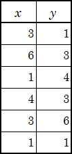

-
以下の集合 A～G について，下の問の空欄を適切に埋めなさい．
なお，普遍集合 Ω は N とします．
⎩⎨⎧ABCDEFG={x∣xは奇数}={x∣xは3の倍数}={x∣2<x<9}={2,3,5,7,11,13}=Bc∩C=C∩D=C∖D
- 以下の集合の要素を列挙して ({1,2,3} のように) 表しなさい．
CF(B∪D)∩C=E==G==
- A～G のうち，F を部分集合として含むものを，全て列挙しなさい．
- A～G のうち，G と互いに素なものを，全て列挙しなさい．
- 集合 F の要素数は であり，集合 D
と集合 G の直積集合の要素数は である．
- 集合 E の全ての部分集合の数は である．
-
以下の式で表される写像 f,g,h について，下の問に答えなさい．なお，どの写像も
R から R への写像であるとします．
f(x)g(x)h(x)=2x−3=x2=x3−x (=x(x−1)(x+1))
- 写像 f,g,h のうち，1対1写像（単射）を全て列挙しなさい．
- 写像 f,g,h のうち，上への写像（全射）を全て列挙しなさい．
- 写像 f,g,h のうち，1対1上への写像（全単射）を全て列挙しなさい．
〔次ページに続きます〕
- 以下の写像を x を用いた式で表しなさい．
f∘g(x)=f(g(x))=g∘f(x)=g(f(x))=f−1(x)=
-
命題と論理式に関して，下の問に答えなさい．なお，必要ならば，以下の記号を用いなさい．
￢：「～でない」，∧：「かつ」，∨：「または」，⇒：「ならば」，
⇔：「ならば，その時に限り」，∀：「全ての」「任意の」，∃：「ある」「存在する」．
- P=「aは偶数である」，Q=「3aは偶数である」とします．
- 命題「aが偶数であるならば，3aは偶数である」を P,Q を，用いた論理式で表しなさい．
⋯(A)
- (A) の論理式の逆と対偶と否定を，P,Q を用いた論理式で表しなさい．
逆：対偶：
否定：
- 命題「aが偶数であるならば，その時に限り3aは偶数である」を P,Q を用いた論理式で表しなさい．
- P は Q であることの十分条件であるか，Yes, No で答えなさい．
- P は Q であることの必要条件であるか，Yes, No で答えなさい．
- R(x)=「xは猫好きである」，S(x)=「xは善人である」とします．
- 命題「猫好きの善人が存在する」を，x,R,S を用いた論理式で表しなさい．
⋯(B)
- 下の空欄を論理記号を埋めて，(B) の論理式の否定を表す論理式を完成させなさい．
x(¬R(x)¬S(x))
-
以下の二項演算のうち，閉じていないものを全て選び，a～h の記号で列挙しなさい．
(a) (N; +)： 自然数の足し算
(b) (N; −)： 自然数の引き算
(c) (Z; +)： 整数の足し算
(d) (Z; −)： 整数の引き算
(e) (Z; ×)： 整数の掛け算
(f) (Z∖{0}; ÷)： 0以外の整数の割り算
(g) (Q; ×)： 有理数の掛け算
(h) (Q∖{0}; ÷)： 0以外の有理数の割り算
-
ba=(1,2)，b=(2,1) として，以下の各々の計算結果を空欄に記しなさい．
2ba−b=(,)，
∥2ba−b∥= (ノルム)，
⟨ba,b⟩= (内積)
〔次ページに続きます〕
-
ベクトルと行列について，以下の各々の計算結果を空欄に記しなさい．
(1324)(314−2)=，
2⋅(1324)−(314−2)=，
(1324)(21)+(12)=，
3512=，
(3512)−1=．
-
1,2,2,3,4,6 の6つの数値について，以下の代表値を求めて空欄に記しなさい．
平均値：，
中央値：，
最頻値：．
-

右表のデータを用いて，以下の値を計算して空欄に記しなさい．
x の平均値(x)：，
x の分散(sx2)：，
y の平均値(y)：，
y の分散(sy2)：，
x,y の共分散(sxy)：
(小数第3位で四捨五入)，
x,y の相関係数(sx⋅sysxy)： (小数第3位で四捨五入)．